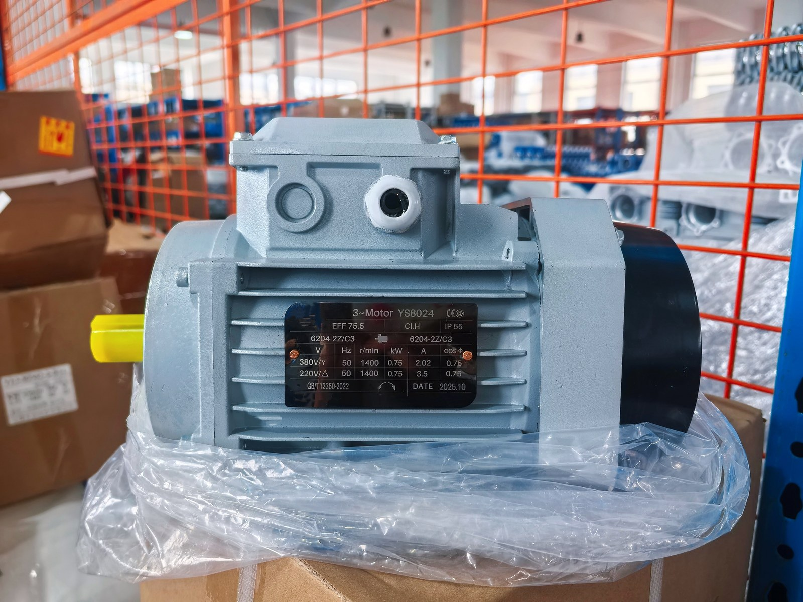

Published August 19, 2026 · Reviewed by SMK Transmission

What Changes During Motor Starting?
A stopped induction motor has no back electromotive force, so it can draw substantially more current than at rated speed. The starter must accelerate the motor and driven load without excessive voltage drop, thermal stress or mechanical shock. Motor power alone is therefore not enough to choose a starting method.
| Method | Starting current | Starting torque | Best fit |
|---|---|---|---|
| DOL | Highest of the three methods | Full across-the-line starting torque | Small or moderate motors where the supply and machine permit it |
| Star-delta | About one-third of DOL delta line current during star stage | About one-third of DOL starting torque | Low-load starts with a suitable six-terminal motor |
| VFD | Controlled by drive settings and load | Controlled acceleration; low-speed torque depends on system design | Variable speed, soft acceleration and process control |
1. Direct-on-Line Starting
DOL connects the motor directly to the supply through correctly selected switching and protection equipment. It is simple and provides strong starting torque, but it also produces the greatest current step and mechanical impact. Check the permitted voltage drop, upstream supply capacity, coupling, gearbox and driven machine before using DOL.
2. Star-Delta Starting
Star-delta starting first connects the windings in star and then changes to delta for normal running. The motor must have six accessible terminals and must be rated to operate in delta at the line voltage. Because both current and torque fall during the star stage, this method works best when the machine begins with little load. A poorly timed transition can produce current and torque transients.
3. Variable Frequency Drive Starting
A VFD changes frequency and voltage to ramp the motor from standstill. It can reduce abrupt acceleration, provide adjustable speed and support process control. Selection must include motor current, overload requirement, minimum operating speed, cooling, cable length, electromagnetic compatibility and braking needs. A VFD does not automatically remove the need for a gearbox.
Illustrative Current Comparison
Assume a motor has a nameplate rated current of 15 A and its supplier indicates a DOL starting-current multiple of 6. The approximate DOL current would be:
15 A × 6 = 90 A
For a suitable star-delta application, the supply-line current during the star stage would be approximately one-third of DOL delta starting current:
90 A ÷ 3 = approximately 30 A
This is an illustration, not a universal motor rating. Use the actual motor data sheet and load-acceleration calculation. The lower star-stage torque can prevent acceleration even when the current reduction looks attractive.
Five Selection Steps
- Record motor data: rated power, voltage, frequency, current, speed, connection and starting limits.
- Define the load: breakaway torque, load inertia, acceleration time, starts per hour and duty cycle.
- Check the supply: permitted starting current, voltage drop and protective-device coordination.
- Check the transmission: gearbox ratio, coupling, belt or chain loads and allowable mechanical shock.
- Verify the environment: enclosure, ambient temperature, dust, moisture, altitude and applicable electrical rules.
Frequently Asked Questions
Which three-phase motor starter is simplest?
DOL is usually the simplest, but only when the supply and driven machine can tolerate its current and torque step.
Can every motor use star-delta starting?
No. The winding voltage, six-terminal arrangement and load torque must all be suitable.
Is a soft starter the same as a VFD?
No. A soft starter primarily limits voltage during starting and stopping, while a VFD controls frequency and can provide continuous speed control.
Does a VFD eliminate a gearbox?
No. The VFD controls speed; the gearbox supplies mechanical reduction and torque multiplication. The required operating envelope determines whether both are needed.